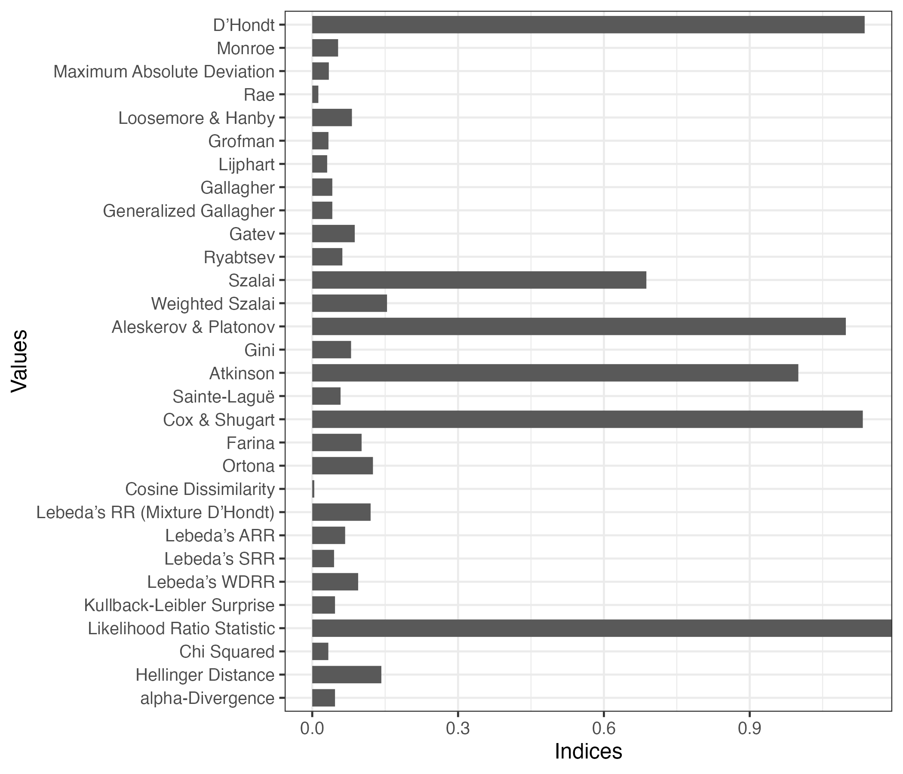
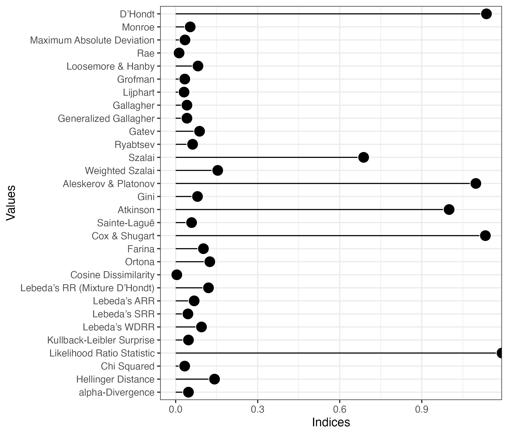

library(PRcalc)
Attaching package: 'PRcalc'The following object is masked from 'package:stats':
decompose
Attaching package: 'PRcalc'The following object is masked from 'package:stats':
decompose Party Hokkaido Tohoku Kitakanto Minamikanto Tokyo Hokuriku Tokai
1 自民 863300 1628233 2172065 2590787 2000084 1468380 2515841
2 公明 294371 456287 823930 850667 715450 322535 784976
3 立憲 682913 991505 1391149 1651562 1293281 773076 1485947
4 共産 207189 292830 444115 534493 670340 225551 408606
5 維新 215344 258690 617531 863897 858577 361476 694630
6 国民 73621 195754 298056 384482 306180 133600 382734
7 社民 41248 101442 97963 124447 92995 71185 84220
8 れ新 102086 143265 239592 302675 360387 111281 273208
9 N党 42916 52664 87702 111298 92353 43529 98238
10 支なし 46142 0 0 0 0 0 0
11 第一 0 0 0 0 33661 0 0
12 やまと 0 0 0 0 16970 0 0
13 コロナ 0 0 0 0 6620 0 0
Kinki Chugoku Shikoku Kyushu
1 2407699 1352723 664805 2250966
2 1155683 436220 233407 1040756
3 1090666 573324 291871 1266801
4 736156 173117 108021 365658
5 3180219 286302 173826 540338
6 303480 113899 122082 279509
7 100980 52638 30249 221221
8 292483 94446 52941 243284
9 111539 36758 21285 98506
10 0 0 0 0
11 0 0 0 0
12 0 0 0 0
13 0 0 0 0Raw:
Party Hokkaido Tohoku Kitakanto Minamikanto Tokyo Hokuriku Tokai
1 自民 863300 1628233 2172065 2590787 2000084 1468380 2515841
2 公明 294371 456287 823930 850667 715450 322535 784976
3 立憲 682913 991505 1391149 1651562 1293281 773076 1485947
4 共産 207189 292830 444115 534493 670340 225551 408606
5 維新 215344 258690 617531 863897 858577 361476 694630
6 国民 73621 195754 298056 384482 306180 133600 382734
7 社民 41248 101442 97963 124447 92995 71185 84220
8 れ新 102086 143265 239592 302675 360387 111281 273208
9 N党 42916 52664 87702 111298 92353 43529 98238
10 支なし 46142 0 0 0 0 0 0
11 第一 0 0 0 0 33661 0 0
12 やまと 0 0 0 0 16970 0 0
13 コロナ 0 0 0 0 6620 0 0
Kinki Chugoku Shikoku Kyushu Total
1 2407699 1352723 664805 2250966 19914883
2 1155683 436220 233407 1040756 7114282
3 1090666 573324 291871 1266801 11492095
4 736156 173117 108021 365658 4166076
5 3180219 286302 173826 540338 8050830
6 303480 113899 122082 279509 2593397
7 100980 52638 30249 221221 1018588
8 292483 94446 52941 243284 2215648
9 111539 36758 21285 98506 796788
10 0 0 0 0 46142
11 0 0 0 0 33661
12 0 0 0 0 16970
13 0 0 0 0 6620
Result:
Party Hokkaido Tohoku Kitakanto Minamikanto Tokyo Hokuriku Tokai Kinki
1 自民 3 6 7 8 6 5 8 8
2 公明 1 1 3 3 2 1 3 3
3 立憲 3 4 5 5 4 3 5 3
4 共産 0 1 1 1 2 1 1 2
5 維新 1 1 2 3 2 1 2 10
6 国民 0 0 1 1 0 0 1 1
7 社民 0 0 0 0 0 0 0 0
8 れ新 0 0 0 1 1 0 1 1
9 N党 0 0 0 0 0 0 0 0
10 支なし 0 0 0 0 0 0 0 0
11 第一 0 0 0 0 0 0 0 0
12 やまと 0 0 0 0 0 0 0 0
13 コロナ 0 0 0 0 0 0 0 0
Chugoku Shikoku Kyushu Total
1 5 3 8 67
2 2 1 4 24
3 3 1 4 40
4 0 0 1 10
5 1 1 2 26
6 0 0 1 5
7 0 0 0 0
8 0 0 0 4
9 0 0 0 0
10 0 0 0 0
11 0 0 0 0
12 0 0 0 0
13 0 0 0 0
Parameters:
Allocation method: D'Hondt (Jefferson) method
Extra parameter:
Threshold: 0
Magnitude:
Hokkaido Tohoku Kitakanto Minamikanto Tokyo Hokuriku
8 13 19 22 17 11
Tokai Kinki Chugoku Shikoku Kyushu
21 28 11 6 20 index()：各種指標の計算k：Generalized Gallagher計算時に使用eta：Atkinson（Gini）計算時に使用alpha：Entropy、\(\alpha\)-divergence計算時に使用 ID Index Value
1 dhondt D’Hondt 1.13647
2 monroe Monroe 0.05321
3 maxdev Maximum Absolute Deviation 0.03413
4 rae Rae 0.01256
5 lh Loosemore & Hanby 0.08162
6 grofman Grofman 0.03335
7 lijphart Lijphart 0.03071
8 gallagher Gallagher 0.04129
9 g_gallagher Generalized Gallagher 0.04129
10 gatev Gatev 0.08744
11 ryabtsev Ryabtsev 0.06195
12 szalai Szalai 0.68738
13 w_szalai Weighted Szalai 0.15384
14 ap Aleskerov & Platonov 1.09773
15 gini Gini 0.07989
16 atkinson Atkinson 1.00000
17 entropy Generalized Entropy 0.02912
18 sl Sainte-Laguë 0.05825
19 cs Cox & Shugart 1.13266
20 farina Farina 0.10153
21 ortona Ortona 0.12490
22 fragnelli Fragnelli 0.00000
23 gb Gambarelli & Biella 0.00000
24 cd Cosine Dissimilarity 0.00417
25 rr Lebeda’s RR (Mixture D’Hondt) 0.12008
26 arr Lebeda’s ARR 0.06769
27 srr Lebeda’s SRR 0.04488
28 wdrr Lebeda’s WDRR 0.09444
29 kl Kullback-Leibler Surprise 0.04684
30 lr Likelihood Ratio Statistic -0.03720
31 chisq Chi Squared 0.03308
32 hellinger Hellinger Distance 0.14218
33 ad alpha-Divergence 0.04582 ID Index Value
1 dhondt D’Hondt 1.13647
2 monroe Monroe 0.05321
3 maxdev Maximum Absolute Deviation 0.03413
4 rae Rae 0.01256
5 lh Loosemore & Hanby 0.08162
6 grofman Grofman 0.03335
7 lijphart Lijphart 0.03071
8 gallagher Gallagher 0.04129
9 g_gallagher Generalized Gallagher 0.04129
10 gatev Gatev 0.08744
11 ryabtsev Ryabtsev 0.06195
12 szalai Szalai 0.68738
13 w_szalai Weighted Szalai 0.15384
14 ap Aleskerov & Platonov 1.09773
15 gini Gini 0.07989
16 atkinson Atkinson 1.00000
17 entropy Generalized Entropy NaN
18 sl Sainte-Laguë 0.05825
19 cs Cox & Shugart 1.13266
20 farina Farina 0.10153
21 ortona Ortona 0.12490
22 fragnelli Fragnelli 0.00000
23 gb Gambarelli & Biella 0.00000
24 cd Cosine Dissimilarity 0.00417
25 rr Lebeda’s RR (Mixture D’Hondt) 0.12008
26 arr Lebeda’s ARR 0.06769
27 srr Lebeda’s SRR 0.04488
28 wdrr Lebeda’s WDRR 0.09444
29 kl Kullback-Leibler Surprise 0.04684
30 lr Likelihood Ratio Statistic -0.03720
31 chisq Chi Squared 0.03308
32 hellinger Hellinger Distance 0.14218
33 ad alpha-Divergence 0.04684 ID Index Value
1 dhondt D’Hondt 1.1365
2 lh Loosemore & Hanby 0.0816
3 gallagher Gallagher 0.0413
4 ad alpha-Divergence 0.0458 Index Value
1 D’Hondt 1.1365
2 Loosemore & Hanby 0.0816
3 Gallagher 0.0413
4 alpha-Divergence 0.0458| Index | Value |
|---|---|
| D’Hondt | 1.136 |
| Loosemore & Hanby | 0.082 |
| Gallagher | 0.041 |
| alpha-Divergence | 0.047 |
Warning: Removed 1 rows containing missing values (`position_stack()`).
Warning: Removed 1 rows containing missing values (`geom_segment()`).Warning: Removed 1 rows containing missing values (`geom_point()`).